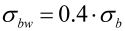
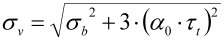
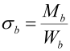
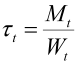
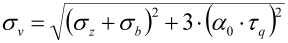
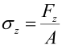
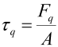
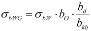
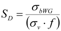

|
|
|


Hänchen & Decker
根据 R. Hänchen 和 H. K. Decker [64] 进行的强度计算是一种古老但成熟的方法。如果缺口系数数据不足，则使用德国慕尼黑 TÜV 推导出的公式：这些公式源自已知的测试结果。
材料值
如图 52、56、60 所示，根据 [64]，材料值适用于结构钢、调质钢和渗碳淬硬钢。所使用的经验公式依据 Hänchen [64] 第 37 页。

您可以在数据库中输入材料数据（参见 数据库工具和外部表 一章）。
等效应力计算
在弯曲和扭转的情况下，KISSsoft 根据最大畸变能假设计算等效应力值 σV（参见 [64] 第 3.2.5 节）。
抗疲劳失效安全计算
- 根据 [64] 公式 (4a) 的最大载荷。工况系数如 [64] 表 1（第 24 页）中所定义。
- 根据 [64] 公式 (42a) 在交变弯曲下的设计弯曲疲劳极限。
- 根据 [64] 公式 (46) 的抗疲劳断裂安全系数。
- 所需的抗疲劳失效安全系数根据 [64] 图 156 确定，并取决于最大载荷的频率。
- 计算结果是所需安全系数与计算安全系数之比，以百分比表示。
重要公式
A）= 等效应力（无限寿命强度）
|  | (25.1) |
|  | (25.2) |
|  | (25.3) |
A1) 等效应力（抗过载失效和变形强度）（τt = 0）
|  | (25.4) |
|  | (25.5) |
|  | (25.6) |
B）抗疲劳失效安全计算：
|  | (25.7) |
|  | (25.8) |
| α0 | a.0 | 应力比系数 | |
| A | A | 横截面积 | (cm3) |
| bd | b.d | 厚度系数 | |
| bkb | b.kb | 缺口系数（弯曲） | |
| bo | b.o | 表面系数 | |
| f | f | 总载荷系数 | |
| Fq | F.q | 剪切力 | (N) |
| Fz | F.z | 拉伸/压缩力 | (N) |
| Mb | M.b | 弯矩 | (Nm) |
| Mt | M.t | 扭矩 | (Nm) |
| σb | s.b | 弯曲应力 | (N/mm2) |
| σbW | s.bW | 交变弯曲应力下的疲劳强度 | (N/mm2) |
| σbWG | s.bWG | 交变弯曲应力下的变形强度 | (N/mm2) |
| σv | s.v | 等效应力 | (N/mm2) |
| SD | S.D | 抗疲劳失效安全系数 | |
| τq | t.q | 剪切应力（力） | (N/mm2) |
| τt | t.t | 扭转应力 | (N/mm2) |
| Wb | W.b | 轴向截面模量 | (cm3) |
| Wt | W.t | 极截面模量 | (cm3) |
应力比系数
应力比系数的值显示在下一张表中（参见表 26.1）。
| 弯曲 | 交变 | 交变 | 静态 | 静态 | 静态 | 静态 |
| 扭转 | 脉动 | 交变 | 脉动 | 交变 | 静态 | 静态 |
| 结构钢 | 0.7 | 0.88 | 1.45 | 1.6 | 1.0 | 1.0 |
| 渗碳淬硬钢 | 0.77 | 0.96 | 1.14 | 1.6 | 1.0 | 1.0 |
| 整体淬火钢 | 0.63 | 0.79 | 1.00 | 1.6 | 1.0 | 1.0 |
表 26.1：应力比系数 α0，根据 Hänchen 第 28 页 [64] 或 Niemann I 第 76 页 [8]
Hänchen & Decker
Strength calculation according to R. Hänchen and H. K. Decker [64] is an old, but well established method. If insufficient notch factor data is present, the equations produced by TÜV in Munich, Germany, are used: they are derived from known test results.
Material values
As shown in Figures 52, 56, 60 in accordance with [64] for construction, heat treated and case hardened steels. The empirical formula used is in accordance with Hänchen [64], page 37
You can input the material data in the database (see chapter Database Tool and External Tables).
Calculation of equivalent stress
In the case of bending and torsion, KISSsoft calculates the equivalent stress value σV according to the hypothesis of the largest distortion energy (see [64], section 3.2.5.).
Calculation of safety against fatigue failure
- Maximum load according to [64], Equation (4a). Operating factor as defined in [64] Table 1 (page 24).
- Design bending fatigue limit under reversed bending according to [64], Equation (42a).
- Safety against fatigue fracture according to [64], Equation (46).
- Required safety against fatigue failure according to [64], Figure 156, depending on the frequency of the maximum load.
- The result of the calculation is the ratio of the required safety to the calculated safety, expressed as a percentage.
Important formulae
A)= Equivalent stress (infinite life strength)
| (25.1) | |
| (25.2) | |
| (25.3) |
A1) Equivalent stress (strength against overload failure and deformation) (τt = 0)
| (25.4) | |
| (25.5) | |
| (25.6) |
B) Calculation of safety against fatigue failure:
| (25.7) | |
| (25.8) |
| α0 | a.0 | Stress ratio factor | |
| A | A | Cross section area | (cm3) |
| bd | b.d | Thickness number | |
| bkb | b.kb | Notch factor (bending) | |
| bo | b.o | Surface number | |
| f | f | Total load factor | |
| Fq | F.q | Shearing force | (N) |
| Fz | F.z | Tension/Compression force | (N) |
| Mb | M.b | Bending moment | (Nm) |
| Mt | M.t | Torque | (Nm) |
| σb | s.b | Bending stress | (N/mm2) |
| σbW | s.bW | Fatigue strength under reversed bending stresses | (N/mm2) |
| σbWG | s.bWG | Deformation strength under reversed bending stresses | (N/mm2) |
| σv | s.v | Equivalent stress | (N/mm2) |
| SD | S.D | Safety against fatigue failure | |
| τq | t.q | Shear stress (force) | (N/mm2) |
| τt | t.t | Torsional stress | (N/mm2) |
| Wb | W.b | Axial moment of resistance | (cm3) |
| Wt | W.t | Polar moment of resistance | (cm3) |
Stress ratio factor
Values for the stress ratio factor are displayed in the next table (see Table 26.1).
| Bending | alternating | alternating | static | static | static | static |
| Torsion | pulsating | alternating | pulsating | alternating | static | static |
| Structural steel | 0.7 | 0.88 | 1.45 | 1.6 | 1.0 | 1.0 |
| Case hardening steel | 0.77 | 0.96 | 1.14 | 1.6 | 1.0 | 1.0 |
| Through hardening steel | 0.63 | 0.79 | 1.00 | 1.6 | 1.0 | 1.0 |
Table 26.1: Stress ratio factor α0 according to Hänchen, p. 28 [64] or Niemann, I, p. 76 [8]